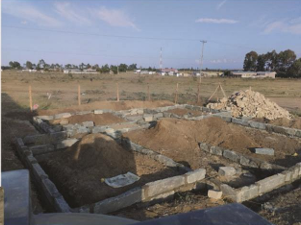

Building works
General Building, Repairs & Remodelling
Reliable residential, commercial, and institutional building works delivered with practical coordination, quality workmanship, and attention to finish.
What we deliver
Reliable building work for homes, businesses, and institutions.
CLAVO Construction delivers house construction, masonry, concrete works, renovations, repairs, remodelling, and coordinated finishing works for residential, commercial, and institutional clients in Kenya.
We support projects from foundation preparation and wall construction through roofing, external works, finishes, and handover. Our teams coordinate materials, trades, workmanship, and quality checks around the project brief and site conditions.
What happens
- Brief, site inspection, and scope definition
- Foundation, materials, and work planning
- Masonry, concrete, repairs, or remodelling
- Finishes, services, and quality checks
- Final inspection and handover
General building projects in Kenya
Construction progress from foundations to finished spaces.
Our building work covers foundations, concrete and blockwork, residential construction, repairs, remodelling, external walls, and final finishes. The gallery shows active construction and completed building improvements from the project portfolio.



Key outcomes
Better-functioning, better-finished spaces.
- Practical repairs
- Coordinated workmanship
- Durable finishes
- Clear work scopes
- Minimal disruption
- Professional handover
Start a conversation
Planning a building upgrade?
Tell us what needs to change, repair, or improve and we will help scope the work.
Request a Quote